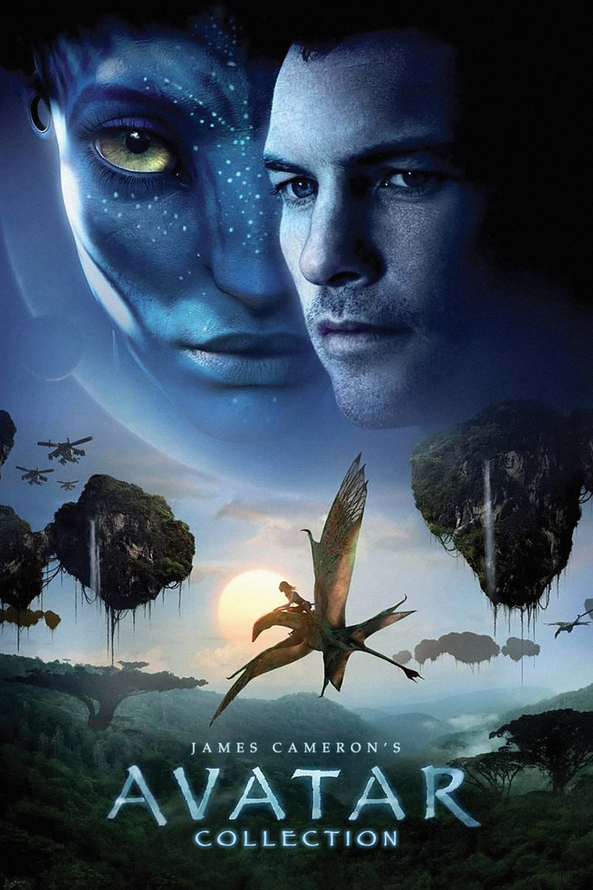

Ficção Científica
Todos os filmes catalogados
Elysium
No ano de 2154, a Terra está superlotada e em decadência, enquanto a elite vive em uma estação espacial luxuosa. Quando descobre que está gravemente doente, Max embarca em uma missão arriscada para chegar até Elysium e mudar o sistema injusto que divide a humanidade.
▶ Assistir Trailer
Avatar
Jake Sully, um ex-fuzileiro paraplégico, é enviado ao planeta Pandora para controlar corpos híbridos chamados avatares. Ao conviver com o povo Na'vi e se apaixonar por Neytiri, Jake precisa escolher entre obedecer às ordens humanas ou proteger o mundo que aprendeu a amar.
▶ Assistir Trailer
Matrix
Neo, um jovem programador, descobre que o mundo em que vive é uma simulação criada por máquinas para controlar a humanidade. Ao conhecer Morpheus e Trinity, ele passa a lutar contra esse sistema e a questionar a própria realidade.
▶ Assistir TrailerMaze Runner
Thomas acorda em um lugar misterioso chamado Clareira, cercado por um labirinto gigante e habitado por outros jovens sem memória do passado. Para sobreviver, eles precisam encontrar uma saída enquanto enfrentam criaturas perigosas.
▶ Assistir TrailerLucy
Após ser forçada a transportar uma droga sintética dentro do próprio corpo, Lucy adquire habilidades sobre-humanas quando a substância vaza em seu organismo. Com sua mente evoluindo rapidamente, ela desenvolve poderes extraordinários enquanto busca vingança.
▶ Assistir Trailer